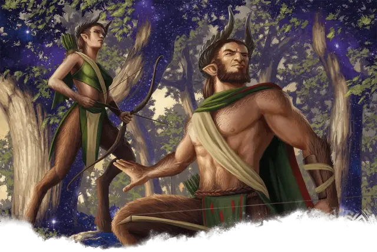

Сатир шипоносец
Satyr Thornbearer
Средняя Фея, хаотично-нейтральная

Класс Доспеха 15 (кожаный доспех)
Хиты 38 (7к8 + 7)
Скорость 40 футов
| мод | спас | ||
|---|---|---|---|
| СИЛ | 12 | +1 | +1 |
| ЛОВ | 18 | +4 | +4 |
| ТЕЛ | 12 | +1 | +1 |
| мод | спас | ||
|---|---|---|---|
| ИНТ | 11 | +0 | +0 |
| МДР | 13 | +1 | +1 |
| ХАР | 14 | +2 | +2 |
Навыки Восприятие +5, Выступление +6, Скрытность +6
Чувства пассивное Восприятие 15
Языки Общий, Сильван
Опасность 2 (450 опыта)
Бонус мастерства +2
Особенности
Сопротивление магии. Сатир совершает с преимуществом спасброски от заклинаний и прочих магических эффектов.
Бессонный гуляка. Сатира нельзя усыпить с помощью магии.
Действия
Мультиатака. Сатир совершает три атаки тараном или коротким луком.
Таран. . Рукопашная атака оружием: +3 к попаданию, досягаемость 5 фт., одна цель. Попадание: 6 (2к4 + 1) дробящего урона.
Короткий лук. Дальнобойная атака оружием: +6 к попаданию, дистанция 80/320 фт., одна цель. Попадание: 7 (1к6 + 4) колющего урона.
Град стрел (перезаряжается после короткого или продолжительного отдыха). Сатир выпускает стрелу, которая магически превращается в 30-футовый конус заполненный стрелами. Каждое существо в этой области должно совершить спасбросок Ловкости Сл 14, получая 17 (5к6) колющего урона при провале или половину урона при успехе.
Описание
Не все сатиры живут жизнью полной прихоти. Когда им приходится защищать своих друзей и дома, сатиры шипоносцы быстро хватаются за луки и наносят удар навстречу опасности. Особенно среди густых деревьев Долины Скола, эти стрелки-сатиры объединяются в разрозненные группы, используя партизанскую тактику, чтобы преследовать врагов, а затем отступать в лес. Благословения Нилеи помогают сатирам защищать свой дом, и одна стрела из лука шипоносца может обрушиться дождем, как залп целой армии.
Сатир
В то время как большинство сатиров известны своим приподнятым настроением, любовью к веселью и общительными личностями, эти общительные создания не наивны и не беззащитны. Некоторые сатиры с удовольствием мучают надменных индивидуумов или разыгрывают беспечных, развлечения это предсказуемо могут привести к дракам. Если сатир не может найти выход из конфликта или развеять его добродушным отвлечением внимания - он с готовностью защищает себя, своих друзей и свои дома в Долине Скола. Отбросив свои развлечения в сторону, сатиры направляют свой ум на тактику и методы урегулирования конфликтов как можно быстрее. Это часто означает использование тех же навыков, которые делают их знаменитыми гуляками, в сражении, будь то увлекательные выступления или цель, разработанная в ходе бесконечных соревнованиях навыков. Однако, как только угроза преодолена, сатиры быстро включаются в свою любимую часть битвы: празднование победы.